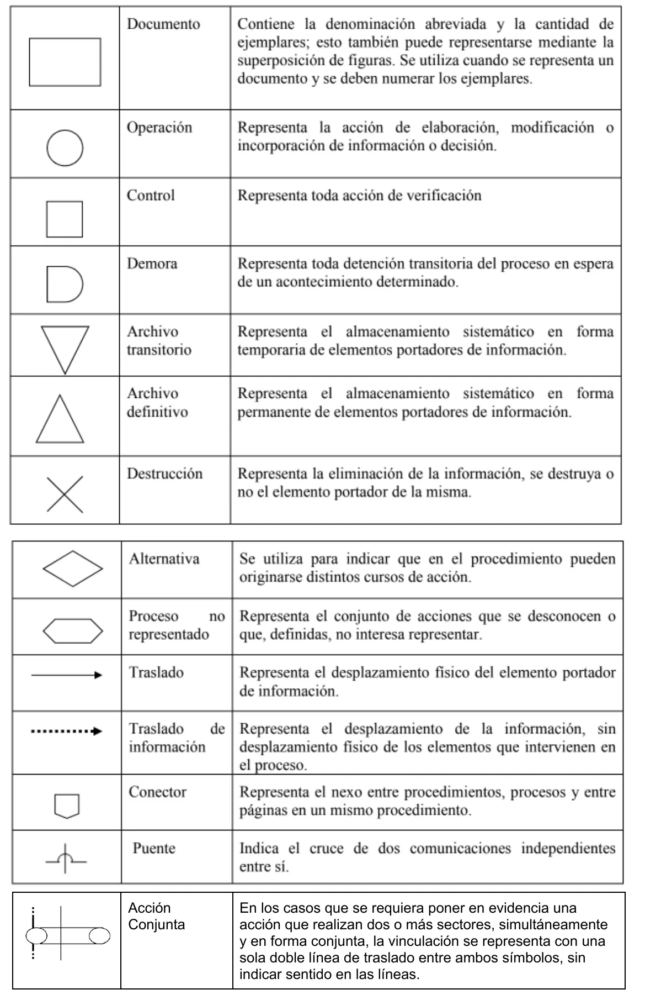
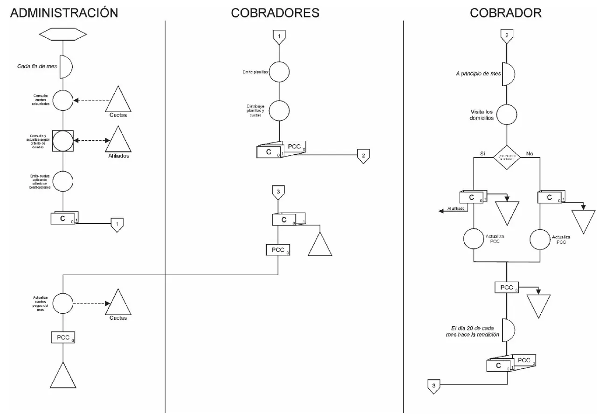

Protocolo de emergencia
Lo justo de Gestión Ingenieril para cada instancia, con el examen encima.
| Instancia | Qué piden |
|---|---|
| Parcial de aprobación directa | Una narrativa de un negocio, con cantidades, y 12 consignas (diez prácticas y dos de teoría). Cursograma siempre primero, dos indicadores a diseñar y cuantificar, DD, reportes y fallas o mejoras. La teoría repite las perspectivas del Cuadro de Mando y los documentos de compras |
| Final | Lo mismo sobre otro caso, de 7 a 13 consignas. Cursograma primero, DD, indicadores y reportes. Los finales viejos cierran con una de teoría |
| Práctica de la cátedra | Siete casos de la guía de práctica, con reportes e indicadores sobre ellos. No es un examen, sirve para entrenar |
Exámenes de antes de 2023
Con más exámenes de atrás se ve que la forma viene de lejos. El parcial de 22/06/2022 tiene la misma estructura que el de 2025 y repite sus dos temas de teoría. Los finales de 2013 y 2015 también son una narrativa con cursograma, DD, indicadores y reportes. Son más largos, de 10 a 13 consignas, y cierran con una de teoría.
Por eso los uso igual, aunque sean de antes de 2023. Solo son dos exámenes nuevos, así que tomá las cantidades como una pista y no como una regla.
Parcial de aprobación directa
| Tipo de consigna | 2025 | 2022 |
|---|---|---|
| Cursograma del proceso (siempre la primera) | 1 | 1 |
| Diseñar y cuantificar un indicador | 2 y 4 | 5 y 10 |
| DD de un almacén o comprobante | 3 | 3 y 7 |
| Informe o reporte, con DD o diseño propio | 7 y 9 | 8 |
| Fallas o mejoras del proceso | 10 | 9 |
| Preguntas de criterio sobre el caso | 5, 6 y 8 | 2, 4 y 6 |
| Teoría | 2 temas | 2 temas |
Cursograma
De dónde sale esta sección
El Drive no tiene el apunte de la cátedra sobre cursogramas. Esto sale del resumen de un alumno (páginas 19 a 21), que cita la Norma IRAM 34.501. Las consignas de la cátedra piden «aplicar normas de graficación», sin decir más. Si tu comisión te dio la norma, manda esa.
Sale de apuntes de alumnos
Todo cursograma expone tres cosas:
- Áreas de responsabilidad: el lugar donde se realiza cada operación o trámite. Se dibujan como columnas.
- Tipos de operaciones o trámites: se representan con símbolos.
- Sentido de circulación: el flujo de la información a través del circuito.
Resumen de un alumno y su trabajo de 2018
Sale de apuntes de alumnos

| Símbolo | Forma | Representa |
|---|---|---|
| Documento | Rectángulo | Lleva la denominación abreviada y la cantidad de ejemplares. Se numeran cuando se detalla cada uno |
| Operación | Círculo | Elaboración, modificación o incorporación de información, o decisión |
| Control | Cuadrado | Toda acción de verificación |
| Demora | Medio círculo | Detención transitoria en espera de un acontecimiento |
| Archivo transitorio | Triángulo con la punta abajo | Almacenamiento temporario |
| Archivo definitivo | Triángulo con la punta arriba | Almacenamiento permanente |
| Destrucción | Cruz | Eliminación de la información, se destruya o no su soporte |
| Alternativa | Rombo | Distintos cursos de acción |
| Proceso no representado | Hexágono | Acciones que se desconocen o que no interesa representar |
| Traslado | Flecha continua | Desplazamiento físico del portador de información |
| Traslado de información | Flecha punteada | Se mueve la información, sin desplazamiento físico |
| Conector | Pentágono | Nexo entre procesos, o entre páginas de un procedimiento |
| Puente | Línea con un arco | Cruce de dos comunicaciones independientes |
| Acción conjunta | Doble línea entre símbolos | Dos o más sectores hacen algo a la vez. La doble línea no lleva sentido |
Resumen de un alumno y su trabajo de 2018
Sale de apuntes de alumnos
El mismo resumen agrega tres notas (página 21):
- Los archivos físicos, transitorios o definitivos, se diagraman con flecha continua y hacia abajo.
- Los archivos lógicos, transitorios o definitivos, se diagraman con flecha punteada y hacia el costado. Si la flecha apunta al archivo, actualiza información. Si apunta a la operación, consulta información.
- Siempre se inicia y se finaliza con un proceso no representado.
En criollo
Pensá en la carpeta del escritorio y en la base de datos. La carpeta es un archivo físico, y el papel baja hasta ahí y se queda. La base de datos es un archivo lógico. El papel no va a ningún lado, solo viaja información por la flecha punteada. Si cargás algo, la flecha va hacia la base. Si mirás algo, viene hacia vos.
Resumen de un alumno y su trabajo de 2018
Sale de apuntes de alumnos
Esta es una forma de ordenarte, no una regla de la cátedra.
- Leé la narrativa entera. Marcá los sectores, que van a ser tus columnas.
- Marcá cada documento con su cantidad de ejemplares. Las narrativas lo dicen casi siempre: «por duplicado», «en tres ejemplares».
- Seguí cada ejemplar hasta el final. Todos tienen que terminar en un archivo, en otro sector o afuera del proceso.
- Separá los archivos físicos de los almacenes lógicos.
- Marcá las decisiones, que van con un rombo y dos salidas.
- Fijate qué dice que no se grafica. La narrativa o la consigna suelen avisarlo.
Resumen de un alumno y su trabajo de 2018
«El proceso que permite ajustar las cantidades a la Normativa, no se debe graficar.» En el parcial de 2022 aparece parecido, con un alta de rubro que «graficamos pero está fuera de estudio su profundización». La hoja del parcial de 2025 que está en el Drive trae escrito a mano «No graficar esta parte» al costado de un tramo.
Sale de apuntes de alumnos

Resumen de un alumno y su trabajo de 2018
No es un modelo oficial
Es del Trabajo Práctico Integrador de un alumno, de 2018 (página 5). Te sirve para ver cómo queda uno entero, con columnas, ejemplares, conectores y demoras. No sé qué nota sacó. Además no cierra con un proceso no representado, como pide el resumen. No lo tomes como la forma correcta.
Diccionario de datos
La forma típica de la consigna es «mediante un DD, los datos mínimos y necesarios del almacén tal». Hay otras variantes. Puede pedir el contenido de un comprobante, o un informe expresado como DD.
Lo que se ve en las consignas, también en las de finales viejos:
- «Datos mínimos y necesarios» de un almacén o documento.
- Con un número fijo de datos: «los 06 datos mínimos y necesarios del PRM» (práctica, ejercicio 4).
- Indicando la clave candidata: «Indicar Clave_Candidata» (final 05/08/2013).
- En dos versiones: «Versión Mínima + Versión Ampliada» (final 05/08/2013).
- Con un agregado justificado: «Indique que dato le agregaría y justifique» (parcial 2025).
El Drive no define la notación de la cátedra
No encontré ningún apunte que la explique. Lo único es cómo la usó un alumno en su trabajo de 2018 (página 8), y lo copio tal cual. Confirmala en tu comisión.
Sale de apuntes de alumnos
Cuota = nro_cuota + nro_grupo_fliar + mes_cuota + año_cuota + monto
+ nombre_cobrador + (fecha_pago)
Afiliado = nro_grupo_fliar + nro_orden + datos_personales(e) + estado(d)
datos_personales(e) = tipo_doc + nro_doc + nombre + apellido + fecha_nac
+ domicilio + teléfono
estado(d) = <habilitado | inhabilitado>En ese trabajo, = significa «se compone de» y + suma campos. Los paréntesis marcan un dato que puede faltar, como la fecha de pago de una cuota sin cobrar. La marca (e) indica una estructura, que se detalla aparte. La marca (d) indica un dato discreto, con sus valores posibles.
Trabajo de un alumno, 2018
Reportes
En el final de 2023 se pidió con información gerencial, «como DD y también diseñar reporte ejemplificando». En el parcial de 2025, que mostrara los tiempos de las etapas de los alquileres. En los dos parciales se pidió diseñar uno útil para el proceso y justificarlo.
Sale de apuntes de alumnos
Un reporte tiene tres partes, según el resumen de un alumno (página 17):
- Título.
- Temas, con su criterio de orden.
- Fecha o período, con la actualización de los datos.
Resumen de un alumno
Las consignas de la guía de práctica (página 13) muestran qué más se espera. Piden:
- Un orden explícito: «ordenados alfabéticamente», «en orden progresivo».
- Totales: por grupo y un total general.
- Porcentajes: por ejemplo, «% del Plan sobre el Total de Pólizas emitidas».
- Un período: mensual, semestral, y qué meses.
- Muestra de datos: por ejemplo, cuantificar solo para dos líneas.
- Casos vacíos: «considerar que pueden no presentarse ausencias».
- Interés gerencial: información que permita sacar conclusiones, no un listado de todo.
Fijate para quién es
El parcial de 2025 preguntó «objetivo y ventajas que traería» y «para quien». No alcanza con dibujar la tabla. Pensá quién la va a leer y qué decide con ella.
Indicadores de gestión
Esta parte sale del apunte de la cátedra Indicadores de Gestión.
Se pide diseñar y cuantificar un indicador con los datos de la narrativa. Después hay que interpretar el valor contra un rango crítico que da el enunciado, o justificarlo.
Un indicador «es una representación Cuantitativa o Cualitativa, verificable objetivamente, que refleja la situación de un aspecto de la realidad y el estado de cumplimiento de un objetivo, actividad o producto deseado en un momento del tiempo» (página 3).
| Concepto | Definición (apunte, página 3) |
|---|---|
| Eficacia | El nivel de logro de los objetivos establecidos, a través de los productos o resultados obtenidos |
| Eficiencia | La óptima utilización de los recursos disponibles en el logro de un objetivo |
| Efectividad | La relación entre los recursos utilizados y el impacto obtenido. Integra la eficacia y la eficiencia |
Las fórmulas del apunte (página 8), con RA y RE resultado alcanzado y esperado, CA y CE costo alcanzado y esperado, TA y TE tiempo alcanzado y esperado:
| Eficacia (rango) | Puntos | Eficiencia (rango) | Puntos | |
|---|---|---|---|---|
| 0 / 20 % | 0 | Muy eficiente, > 1 | 5 | |
| 21 / 40 % | 1 | Eficiente, = 1 | 3 | |
| 41 / 60 % | 2 | Ineficiente, < 1 | 1 | |
| 61 / 80 % | 3 | |||
| 81 / 90 % | 4 | |||
| > 91 % | 5 |
Dos cosas raras del apunte
Las tablas van tal cual están en las páginas 8 y 9. El rango último dice «> 91 %», así que el 91 % justo queda sin tabla. Además el apunte dice que «la efectividad se expresa en porcentaje», pero la fórmula da un puntaje de 0 a 5 y no explica cómo pasarlo. Si te lo piden, preguntá.
| Forma | Qué es | Ejemplo del apunte (páginas 4 y 5) |
|---|---|---|
| Índice o razón | Relación entre dos valores, de la misma variable o no | Vendedores cesados en el año / promedio de vendedores anuales = 10 / 200 = 0.05 |
| Proporción | Igualdad entre dos razones. Sirve para comparar y reducir números grandes | 15 / 12 = 5 / 4 = 1.25 |
| Coeficiente K | Valor numérico de una razón. Es cuánto numerador hay por cada unidad de denominador | Total alumnos / total docentes = 90 / 3 = 30 alumnos por docente |
| Porcentaje | Numerador y denominador en la misma unidad, por 100 | Unidades rechazadas / fabricadas = 25 / 200 = 0.125, o sea 12.5 % |
| Relación | Una cosa cada tantas de otra | 10 pedidos / 200 visitas = 1 / 20, un pedido concretado por 20 visitas |
| Rotación o cumplimiento | Veces que se logró una meta | Recaudado / programado = 13.5 / 10 = 1.35, el 135 % de la meta |
Escribí la unidad y el nombre
En el apunte el resultado siempre dice qué es: «alumnos por docente», «1 pedido concretado por 20 visitas». Un número suelto no se puede interpretar.
Para cada indicador se determina (apunte, página 9):
- Estado: el valor actual o inicial.
- Umbral: el valor que se requiere lograr o mantener.
- Rango de gestión: el espacio entre los valores mínimos y máximos que puede tomar.
- Periodicidad o frecuencia: cada cuánto se mide.
- Análisis de la información: la interpretación de los resultados, que representa el potencial de mejora.
- Fecha de revisión: cuándo se revisa, ajusta o modifica.
Las consignas con «rango crítico» juegan con esto. Te dan el rango y te piden el análisis.
Catálogo del apunte
Son los indicadores que el apunte da como clave, con sus mismas fórmulas (páginas 10 a 17). No hace falta memorizar todos. Sirven para saber cómo se arma uno.
Producción y logística
| Indicador | Fórmula |
|---|---|
| Utilización | Capacidad utilizada / Capacidad disponible |
| Rendimiento (eficacia) | Nivel de producción real / Nivel de producción esperada |
| Eficiencia de la mano de obra | Costo real de MO / Costo presupuestado de MO |
| Eficiencia de materiales | Costo real de materiales / Costo presupuestado de materiales |
| Rendimiento de la calidad | Volumen de producción conforme / Volumen total producido |
| Mermas | Total de kilos producidos / Total en kilos de materias primas utilizadas |
| Rechazos de calidad | Total de rechazos por falta de calidad / Total producido |
| Período de producción | Días de trabajo (año laboral) / Rotación de productos semielaborados |
| Período de aprovisionamiento | Días de trabajo (año laboral) / Rotación de materias primas |
| Ausentismo o presentismo | Días trabajados / Días laborables |
| Producción por hora | Total piezas fabricadas / Total horas programadas |
| Entregas perfectamente recibidas | Pedidos rechazados / Total de órdenes de compra emitidas |
| Certificación de proveedores | Proveedores certificados / Total de proveedores |
| Costo de almacenamiento por unidad | Costo total de almacenamiento / Número de unidades almacenadas |
| Costo de unidad despachada | Costo total operativo del almacén / Unidades despachadas |
| Cumplimiento de despachos | Número de despachos cumplidos / Total de despachos requeridos |
| Costo del metro cuadrado de almacén | Costo total operativo del almacén / Área física de almacenamiento |
| Obsolescencia | (Unidades dañadas + obsoletas + vencidas) / Unidades disponibles en el inventario |
| Unidades despachadas por operario | Total unidades despachadas / Total operarios de despacho |
| Costo de despacho por operario | Costo total operativo del almacén / Número de operarios del almacén |
| Costos de transporte contra venta | Costo del transporte / Valor de ventas totales |
| Entregas a tiempo | Pedidos entregados en fecha / Total de pedidos entregados |
| Pedidos entregados completos | Pedidos entregados completos / Total de pedidos entregados |
| Documentación sin problema | Facturas generadas sin errores / Total de facturas |
| Costos logísticos contra ventas | Costos totales logísticos / Ventas totales |
| Rotación de materias primas | Unidades vendidas en el período / Existencia promedio del inventario |
| Errores de previsión de demanda | (Demanda real - Previsión) / Previsión |
Un nombre engañoso
El «Indicador de Entregas perfectamente Recibidas» del apunte (página 11) divide los pedidos rechazados, a pesar del nombre. Va literal. Si lo usás, aclará qué mide.
Recursos humanos
| Indicador | Fórmula |
|---|---|
| Horas de capacitación por trabajador | Total de horas de capacitación / Total de trabajadores |
| Costo de capacitación | Total de gasto en capacitación / Total de trabajadores |
| Accidentes por trabajador | Número de días perdidos / Total de trabajadores |
| Frecuencia | Accidentes con pérdida de tiempo / Horas hombre efectivamente trabajadas |
| Gravedad | Días perdidos / Horas hombre efectivamente trabajadas |
| Rotación (turnover) | (Ingresos + Salidas) / 2 |
| Desvinculaciones voluntarias | Salidas por renuncia voluntaria / Total de trabajadores del período |
| Desvinculaciones totales | Salidas totales / Total de trabajadores del período |
| Ausentismo por días | Días hombre perdidos / Días hombre laborables |
| Ausentismo por horas | Horas hombre perdidas / Horas hombre laborables |
| Coste medio salarial | Total gastos en personal / Plantilla media de personal |
| Sugerencias del personal | Total sugerencias recibidas / Número total de empleados |
Compras
| Indicador | Fórmula |
|---|---|
| Compras estratégicas | Compras reales / Compras presupuestadas |
| Costo medio de orden de compra | Coste total de aprovisionamiento / Número de órdenes de compra |
| Concentración de compra | Importe total de compras / Número total de pedidos |
| Ranking de proveedores ABC, 1 | Valor de las compras al proveedor / Valor total de las compras |
| Ranking de proveedores ABC, 2 | Número de pedidos al proveedor / Número total de pedidos |
| Rechazos | Valor de las devoluciones / Valor de las compras |
| Factor de urgencia | Pedidos urgentes / Pedidos totales, en unidades monetarias |
| Dependencia de proveedores | Compras a proveedor exclusivo / Compras totales |
| Plazo medio de entrega | Valor de pedidos pendientes / Promedio diario de compras |
Gestión comercial
| Indicador | Fórmula |
|---|---|
| Margen bruto | Utilidad bruta / Ventas netas |
| Utilidades netas | Utilidades netas / Ventas netas |
| Costes de operaciones | Costes totales / Ventas netas |
| Rotación de inventarios, 1 | Precio de venta de los bienes / Precio promedio de venta del inventario |
| Rotación de inventarios, 2 | Ventas en unidades / Inventario promedio en unidades |
| Margen de utilidad sobre el costo | Margen de utilidad en unidades monetarias / Costo |
| Margen de utilidad sobre el precio | Margen de utilidad en unidades monetarias / Precio de venta |
| Rebajas | Rebaja en unidades monetarias / Ventas totales netas |
| Precio medio de venta | Ventas totales en unidades monetarias / Ventas totales en unidades físicas |
| Ventas por visita | Unidades monetarias vendidas / Número de visitas realizadas |
| Desempeño del vendedor | Ventas de cada vendedor / Ventas totales |
| Rotación de vendedores | Vendedores cesados en el año / Vendedores promedio en el año |
| Costes de venta | Costes de venta / Costes totales |
Clientes
| Indicador | Fórmula |
|---|---|
| Calidad | Interacciones con solución en un solo contacto / Volumen total de interacciones |
| Satisfacción | Clientes que manifiestan insatisfacción / Total de contactos atendidos. Debe ser decreciente |
| Retención | Clientes retenidos que solicitan retiro del servicio / Total de clientes que solicitan el servicio |
| Costo por atención por agente | Contactos por agente / Costo total del servicio |
| Costo por atención por horario | Contactos por horario / Costo total del servicio |
Finanzas
| Ratio | Fórmula |
|---|---|
| Liquidez severa o prueba ácida | (Activo corriente - Existencias) / Pasivo corriente |
| Endeudamiento total | (Pasivo corriente + Pasivo no corriente) / Patrimonio |
| Rentabilidad del activo (ROA) | Utilidad neta / Activo |
| Rentabilidad neta sobre ventas | Utilidad neta / Ventas netas |
| Rotación de inventarios | Costo de ventas / Existencias en unidades |
Fallas y mejoras
«Indique fallas o mejoras que podría observar en dicho proceso» está en el parcial de 2025, y una parecida en el de 2022. El final de 2023 lo pide atado a un problema concreto, con la queja de los clientes por los precios facturados.
La cátedra no da un método en el material del Drive. Estas son pistas para buscarlas, tomadas de lo que el cursograma deja ver y de las normas de control interno de más abajo:
- Pasos innecesarios, falta de controles y exceso de formularios o registros.
- Funciones que deberían estar separadas y las hace la misma persona.
- Un documento o un archivo que falta, o que debería tener una copia.
- Una comunicación telefónica sin registro.
- Un dato que se guarda y nadie usa, o uno que se necesita y no se guarda.
- Una política que no tiene lógica contra los números de la narrativa.
Lo que se espera es una mejora concreta y justificada. «Justifique» y «Explique» aparecen seguido en las consignas.
Documentos del proceso de compras
En 2025: «¿Qué documentación o comprobantes participan en un sistema del proceso de compras? Justificar la función de por lo menos 3 de ellos.» En 2022: «Indique en un Proceso de Compras, cuatro documentos que se utilizan e indique cual es la función de cada uno y que inconveniente podría existir su no existencia.»
De dónde salen los procedimientos
Todo lo de documentos y procedimientos sale del resumen de un alumno (páginas 2 a 13). La guía de la cátedra solo lista los temas, y el apunte que los desarrolla no está en el Drive. Parecen armados con material de la cátedra, pero no lo pude confirmar. Usalos para orientarte y contrastalos con tu comisión.
Sale de apuntes de alumnos
Toda operación se registra, y ese registro tiene que estar respaldado. Una de las formas más adecuadas es emitir documentación específica, con el detalle de la operación y con signo de su legitimación.
| Documentos que se archivan y generan registración | Documentos que solo se archivan |
|---|---|
| Factura | Orden de compra |
| Nota de débito | Nota de venta |
| Nota de crédito | Remito |
| Ticket | Resumen de cuenta |
| Recibo | |
| Pagaré | |
| Cheque | |
| Nota de crédito bancaria |
Las siglas más comunes son REQ (nota de requisición), PC (pedido de cotización), OC (orden de compra), NR (nota de recepción), RTO (remito), FAC (factura), ND y NC (notas de débito y crédito), RBO (recibo), OP (orden de pago), CH (cheque), PAG (pagaré), HR (hoja de ruta), MC (minuta contable) y OPR (orden de producción).
Resumen de un alumno
Sale de apuntes de alumnos
| El proceso emite | No emite |
|---|---|
| Nota de requisición: pide la adquisición o provisión de un bien o servicio | Cotización |
| Pedido de cotización o solicitud de compra: pide a los potenciales proveedores una cotización | Remito |
| Orden de compra o nota de pedido: solicita al proveedor los bienes o servicios detallados | Factura |
| Informe o nota de recepción: constancia de que los bienes o servicios se recibieron |
Resumen de un alumno
Sale de apuntes de alumnos
Módulos del proceso de compras:
- Detección de la necesidad de compra.
- Selección de proveedores y pedido de cotización.
- Adjudicación.
- Colocación de la orden de compra.
- Recepción.
- Contabilización.
Resumen de un alumno
Sale de apuntes de alumnos
- Separación de funciones: Compras se separa del manejo físico de los bienes y de su registración. O sea, de Almacenes, Recepción, Cuentas a Pagar, Contabilidad y Administración.
- Inicio del trámite: con un pedido formal de un funcionario responsable.
- Cotizaciones: arriba de cierto monto se piden por lo menos 3, para evitar la discrecionalidad del responsable.
- Autorización: el funcionario interviene con su firma la cotización o la orden de compra.
- Punto de pedido o lote de compra: la cantidad en existencia a partir de la cual se solicita la compra. Se establece como un stock mínimo más un margen de seguridad.
- Control de lo recibido: calidad y cantidad, con reportes escritos. Si la calidad requiere conocimientos técnicos suele separarse de Almacenes, que solo da conformidad por la cantidad.
- Seguros: sobre la mercadería en tránsito por cuenta y riesgo de la empresa.
Resumen de un alumno
Las cuatro perspectivas
«Explique brevemente las Perspectivas del Cuadro de Mando de Kaplan y Norton.» Es la misma consigna, con las mismas palabras.
Explique brevemente las Perspectivas del Cuadro de Mando de Kaplan y NortonParciales AD 17/06/2025 y 22/06/2022
Financiera. Los objetivos financieros sirven de enfoque para los objetivos e indicadores de todas las demás perspectivas. Cada medida forma parte de relaciones de causa y efecto que culminan en la mejora de la actuación financiera.
Del cliente. Las empresas identifican los segmentos de cliente y de mercado en que han elegido competir. Permite equiparar los indicadores clave sobre clientes (satisfacción, fidelidad, retención, adquisición y rentabilidad) con esos segmentos.
Del proceso interno. Los directivos identifican los procesos más críticos para conseguir los objetivos de accionistas y clientes. Sus objetivos e indicadores suelen desarrollarse después de formular los de las perspectivas financiera y del cliente. Abarca la cadena de innovación, operaciones y servicio posventa.
De aprendizaje y crecimiento. Proporciona la infraestructura que permite alcanzar los objetivos de las otras tres perspectivas. Sus variables son las capacidades de los empleados, las capacidades de los sistemas de información, y la motivación, delegación de poder y coherencia de objetivos.
Fuente: El Cuadro de Mando Integral, Kaplan y Norton, páginas 59, 76, 105, 110, 139 y 140.
| Perspectiva | Indicadores genéricos (libro, páginas 55 y 56) |
|---|---|
| Finanzas | Rendimientos sobre las inversiones y valor añadido económico |
| Clientes | Satisfacción, retención y cuota de mercado |
| Procesos internos | Calidad, tiempo de respuesta, coste e introducción de nuevos productos |
| Formación y crecimiento | Satisfacción de los empleados y disponibilidad de sistemas de información |
Los porcentajes del resumen
El resumen de un alumno (página 16) le pone un peso a cada perspectiva: financiera 22 %, clientes 23 a 25 %, procesos 28 a 30 % y aprendizaje 23 a 25 %. Trae también otros indicadores de ejemplo. No los encontré en las páginas del libro que leí, así que no los doy por firmes.
Final
Todo lo del parcial entra acá. Esta parte suma lo que aparece solo en los finales.
| Tipo de consigna | 2023 | 2015 | 08/2013 | 02/2013 |
|---|---|---|---|---|
| Cursograma (siempre la primera) | Sí | Sí | Sí | Sí |
| DD de un almacén, documento o informe | 1 | 5 | 4 | 2 |
| Formato o diseño de planilla o pantalla | Con el reporte | 1 | 1 | |
| Reporte o listado | 1 | Dentro de los DD | 2 | 1 |
| Indicador a diseñar y cuantificar | 2 | 2 | 3 | 4 |
| Mejoras o preguntas de criterio sobre el caso | 2 | 2 | Dentro de los indicadores | |
| Otras a resolver sobre el caso | 1 | |||
| Teoría | No | 1 | 1 | 1 |
| Total de consignas | 7 | 13 | 11 | 10 |
La fecha del final de 2015
El archivo del Drive se llama 2015-09-03, pero la hoja dice 09.03.2015. Lo tomo como 9 de marzo, que es el formato que usan los otros exámenes de esa época.
El Cuadro de Mando a fondo
Sale de los capítulos 3 a 6 de El Cuadro de Mando Integral, de Kaplan y Norton.
Perspectiva financiera. El cuadro debe contar la historia de la estrategia, empezando por los objetivos financieros a largo plazo (página 59). Los objetivos financieros cambian según la fase del negocio (páginas 60 a 62).
| Fase | Cómo es | Objetivo financiero general |
|---|---|---|
| Crecimiento | La más temprana. Productos con potencial de crecimiento, mucha inversión | Porcentaje de crecimiento de ventas en mercados, grupos de clientes y regiones seleccionados |
| Sostenimiento | Atrae inversión pero se le exigen excelentes rendimientos | Rentabilidad: beneficios de explotación, margen bruto, ROCE, valor añadido económico |
| Cosecha o recolección | Madura. Se recolectan las inversiones anteriores | Aumentar al máximo el retorno del cash flow y reducir necesidades de capital circulante |
Para cada fase hay tres temas financieros que impulsan la estrategia (página 64). Son el crecimiento y la diversificación de los ingresos, la reducción de costes y mejora de la productividad, y la utilización de los activos. Se les suma la gestión del riesgo (página 63).

Perspectiva del cliente. Primero hay que elegir los segmentos. La esencia de la estrategia también exige elegir lo que no hay que hacer (página 77).
| Indicador | Qué mide |
|---|---|
| Cuota de mercado | La proporción de ventas en un mercado dado, en número de clientes, dinero gastado o unidades vendidas |
| Incremento de clientes | La tasa a la que la unidad atrae o gana nuevos clientes o negocios |
| Retención de clientes | La tasa a la que la unidad retiene o mantiene las relaciones existentes |
| Satisfacción del cliente | El nivel de satisfacción según criterios de actuación específicos dentro de la propuesta de valor |
| Rentabilidad del cliente | El beneficio neto de un cliente o segmento, después de los gastos para mantenerlo |

El libro no es parejo con esta lista
La lista de la página 80 pone cuota, incremento, adquisición, satisfacción y rentabilidad. La tabla de la figura 4.1, en la página 81, pone retención en lugar de adquisición. Y el diagrama usa adquisición y retención, sin incremento. Uso la tabla, porque define cada uno. Si te la piden, nombrá los que estudió tu comisión.
Perspectiva del proceso interno. Los directivos identifican los procesos más críticos para los objetivos de accionistas y clientes. Es típico hacerlo después de formular las perspectivas financiera y del cliente (página 105).

| Proceso | Qué es (páginas 110 a 118) |
|---|---|
| Innovación | La onda larga de creación de valor. Investiga las necesidades de los clientes y crea los productos o servicios que las satisfacen |
| Operaciones | La onda corta. Empieza con la recepción de un pedido y termina con la entrega del producto o servicio |
| Servicio posventa | Atender y servir al cliente después de la venta o entrega |
Para las operaciones, los indicadores son de calidad, tiempo de ciclo y costes (páginas 119 y 138).
Aprendizaje y crecimiento
La consigna 11 usa el mismo nombre que la figura 6.1, en la página 142 del libro: «La estructura de los indicadores de aprendizaje y crecimiento». Los indicadores clave son los de arriba, los medios son los de abajo.
Proporciona la infraestructura para alcanzar los objetivos de las otras tres. Sus objetivos son los inductores necesarios para conseguir resultados excelentes en ellas (página 139). Tiene tres categorías de variables (página 140):
- Las capacidades de los empleados.
- Las capacidades de los sistemas de información.
- Motivación, delegación de poder (empowerment) y coherencia de objetivos.

Dentro del núcleo de indicadores clave, la satisfacción del empleado se considera generalmente el inductor de las otras dos (página 142).
| Indicador clave | Cómo se mide (páginas 143 a 145) |
|---|---|
| Satisfacción del empleado | Encuesta, con una escala de puntaje |
| Retención del empleado | Porcentaje de rotación del personal clave |
| Productividad del empleado | Por ejemplo, ingresos por empleado o valor añadido por empleado |
La figura 6.2 detalla los inductores para situaciones concretas (página 146):
| Competencias del personal | Infraestructura tecnológica | Clima laboral |
|---|---|---|
| Capacitación estratégica | Tecnologías estratégicas | Ciclo de decisión clave |
| Niveles de entrenamiento | Bases de datos estratégicas | Enfoque estratégico |
| Equilibrio de la capacitación | Adquisición de experiencia | Otorgar poder al personal |
| Software propio | Coherencia de objetivos personales con los de la organización | |
| Patentes, copyrights | Moral | |
| Capacidad para el trabajo en equipo |
Consumo de recursos
Sale del apunte Indicadores de Gestión, páginas 6 y 7.
Productividad: el enfoque sistémico la define como la relación entre la producción final y los factores productivos utilizados en la producción de bienes y servicios. Se mide porque permite evaluar la cultura del desempeño, definir estrategias y establecer políticas visionarias.
Mencionar 6 recursos importantes de los cuales a partir de su disminución aumenta la productividadFinal 09/03/2015
El apunte da estos ejemplos:
- Costos utilizados en operaciones de trabajo repetitivo.
- Tiempos utilizados en operaciones de trabajo repetitivo.
- Horas hombre utilizadas en operaciones de trabajo repetitivo.
- Número de horas extras.
- Tiempos de implantación.
- Plazos de tiempo.
- Duración de un ciclo.
- Desgaste de equipos.
- Uso de máquinas y equipamiento.
Fuente: Indicadores de Gestión, apunte de la cátedra, página 7.
El apunte agrega un modelo con los recursos más utilizados en las organizaciones, siempre sumando el tiempo: man, money, materials, machines, methods y management (página 7).
Ventas a crédito y control interno
«Procedimientos: Ventas a Crédito. Controles sobre el contenido de la información almacenada: Ventas registradas pero no despachadas. Análisis y detección de la misma.» El Drive no trae el apunte con el que se contesta.
Solo tenemos el índice
La guía Procedimientos y Técnicas de Control lista los temas, sin desarrollarlos. El apunte que los explica no está en el Drive. No invento su contenido. Si tu comisión lo dio, sumalo.
La guía pide estudiar cada procedimiento con un Arrow Chart y estos principios y técnicas de control:
- Definición y separación de funciones.
- Análisis de control interno: controles generales.
- Controles del procesamiento electrónico: controles de entrada.
- Controles de programas y de procesos de computación.
- Controles de salida de información.
- Controles sobre la base de datos.
- Controles sobre el contenido de la información almacenada.
Lo que sí está desarrollado es el procedimiento de ventas, en el resumen de un alumno.
Sale de apuntes de alumnos
Antes de vender a crédito se mira el límite crediticio y los antecedentes del cliente con otras empresas, como en el Veraz.
| Entradas | Procesos | Salidas | Archivos |
|---|---|---|---|
| Pedido del cliente | Verificar existencia | Remito | Notas de pedido |
| Remito conformado | Valorizar pedidos | Factura | Stock de productos |
| Verificar límite de crédito | Subdiario de ventas | Cuenta corriente de clientes | |
| Preparar pedido y remito | Remitos | ||
| Entregar | Facturas | ||
| Emitir factura | |||
| Registrar |
Actividades:
- Recepción del pedido y verificación de existencias.
- Valoración de la nota de pedido: se pone el precio. Va una copia a Almacenes de Productos Terminados y otra a facturación.
- Crédito: si el cliente lo solicita, Créditos y Cobranzas lo otorga. Si ya lo tiene, solo se controla que la cuenta corriente no supere el límite.
- Preparación y despacho: se confecciona el remito, se da de baja el stock y se despacha. El cliente firma el remito.
- Facturación: con el remito firmado, Contaduría hace la factura y el registro contable, y manda el original al cliente.
Para determinar el crédito disponible del cliente se comparan los saldos impagos a la fecha, más los pedidos pendientes de facturación, menos las cobranzas recibidas pendientes de registración (página 11).
Resumen de un alumno
Práctica de la cátedra
Usa todo lo de arriba sobre siete casos. Lo que suma es esto.
Inventarios
La guía de práctica de la cátedra da dos cosas de inventarios.
Precio promedio ponderado (PPP). Es el criterio de valuación que usa, y lo define así: «PPP = Monto total en $ / cantidad de unidades» (práctica, ejercicio 1, página 2).
Sale de apuntes de alumnos
Punto de pedido. El ejercicio 2 de la práctica pide «las tres variables a contemplar para la determinación del punto de pedido», pero la guía no las da. El resumen de un alumno lo define como la cantidad en existencia a partir de la cual se solicita la compra, y lo establece como un stock mínimo más un margen de seguridad (página 3).
Resumen de un alumno
Qué cae más
El sitio no tiene todos los exámenes que se tomaron, así que esto es una pista y no una promesa. Tocá un tema para ver en qué exámenes salió.
Final
Sale de 4 exámenes de este sitio.
Cursogramaen 4 de 4
Indicadoresen 4 de 4
Reportesen 3 de 4
Mejorasen 2 de 4
Práctica de la cátedra
Sale de 10 exámenes de este sitio.
Cursogramaen 7 de 10
- Práctica, ejercicio 1: ventas en cuenta corriente
- Práctica, ejercicio 2: administración de productos terminados
- Práctica, ejercicio 3: gestión de insumos
- Práctica, ejercicio 4: planeamiento de la producción
- Práctica, ejercicio 5: gestión de RRHH
- Práctica, ejercicio 6: gestión de seguros
- Práctica, ejercicio 7: gestión de pañol de repuestos
Reportesen 2 de 10
Exámenes
«Respuesta oficial» es lo que está en el Drive. «Propuesta sin verificar» es una respuesta armada con inteligencia artificial que ningún docente revisó.
Parcial de aprobación directa
- Parcial de aprobación directa, 17/06/202517/06/2025Propuesta sin verificar
- Parcial de aprobación directa, 22/06/202222/06/2022Propuesta sin verificar
Final
- Final, 28/06/202328/06/2023Propuesta sin verificar
- Final, 09/03/201509/03/2015Propuesta sin verificar
- Final, 05/08/201305/08/2013Propuesta sin verificar
- Final, 25/02/201325/02/2013Propuesta sin verificar
Práctica de la cátedra
- Práctica, ejercicio 1: ventas en cuenta corriente2017Propuesta sin verificar
- Práctica, ejercicio 2: administración de productos terminados2017Propuesta sin verificar
- Práctica, ejercicio 3: gestión de insumos2017Propuesta sin verificar
- Práctica, ejercicio 4: planeamiento de la producción2017Propuesta sin verificar
- Práctica, ejercicio 5: gestión de RRHH2017Propuesta sin verificar
- Práctica, ejercicio 6: gestión de seguros2017Propuesta sin verificar
- Práctica, ejercicio 7: gestión de pañol de repuestos2017Propuesta sin verificar
- Práctica de reportes2017Propuesta sin verificar
- Práctica de indicadores de gestión2017Propuesta sin verificar
- Práctica, anexos de reportes e indicadores2017Propuesta sin verificar